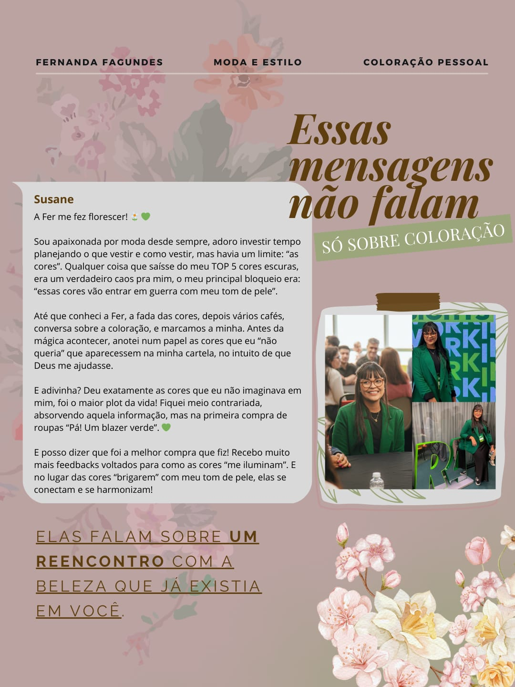
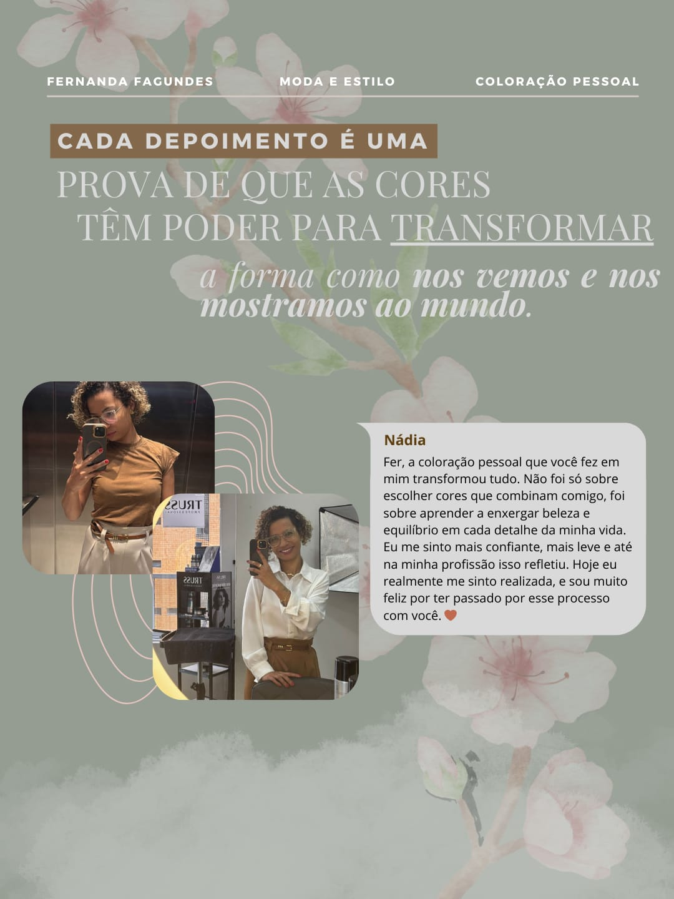
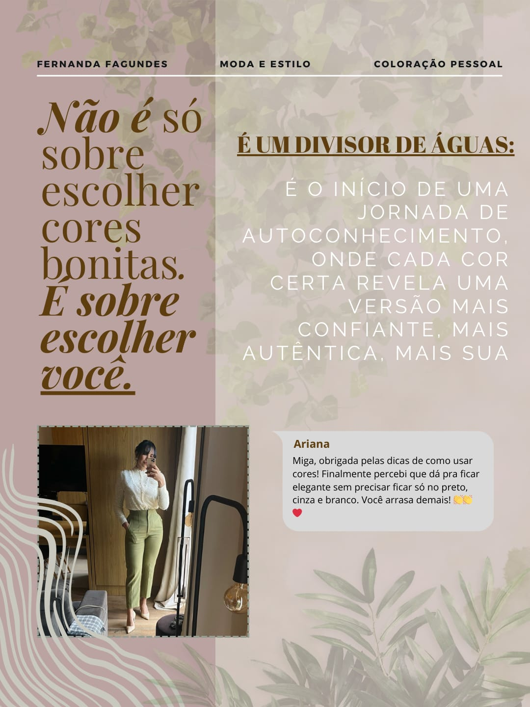
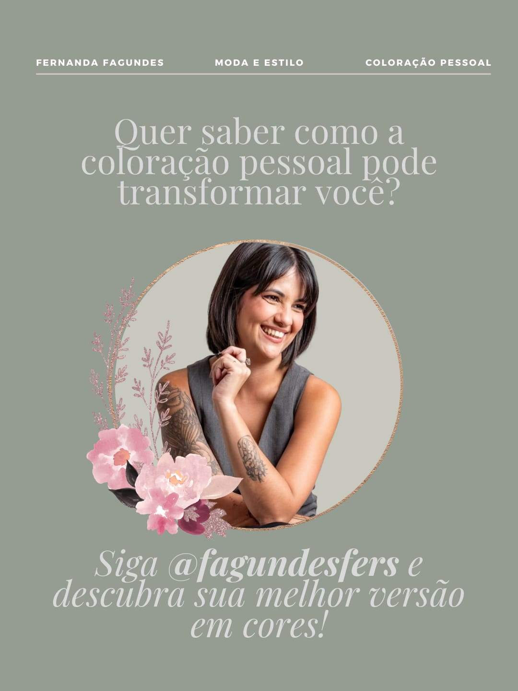

- 
- 
- 
- 
Café Com Cores 🎨
Mote: Serviços (Obrigatório) [cite: 22]
O Café com Cores foi um workshop de coloração pessoal idealizado pela minha cliente, que trabalha com consultoria de estilo e análise de cores, realizado em uma cafeteria com o objetivo de proporcionar uma experiência intimista e educativa sobre a psicologia das cores. Fui responsável pela criação do nome do evento, pelo planejamento estratégico de divulgação, pela produção dos vídeos e pela cobertura completa no dia. A proposta foi unir o aconchego do café ao universo das cores, transmitindo leveza, feminilidade e autoconhecimento por meio de cada conteúdo criado.